r01 · 明月松间照，清泉石上流。
既有真实回答。本地重放；自动选择 indigo，未指定手动配色。
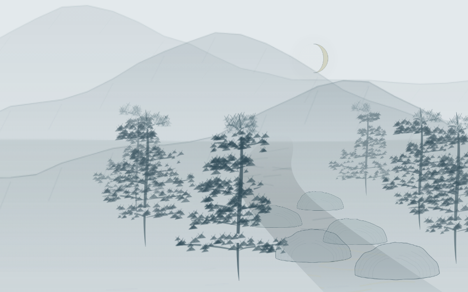
用刚才反馈中的十份真实回答重放，比较改前与当前默认效果。点击改后画面可直接拖动、切换构图；无需再次请求模型。鸟、船等默认单独移动，竹林成组；按住 Shift 可移动同层整组。
这是同批回归，不是新的 API 泛化试验。两份回答的引用范围曾展开，原始失败保留。几何检查通过仍需观看判断；“荷风”借荷叶提示来源、“花欲燃”用红色属于有说明的本地表达。
既有真实回答。本地重放；自动选择 indigo，未指定手动配色。

既有真实回答。本地重放；自动选择 indigo，未指定手动配色。
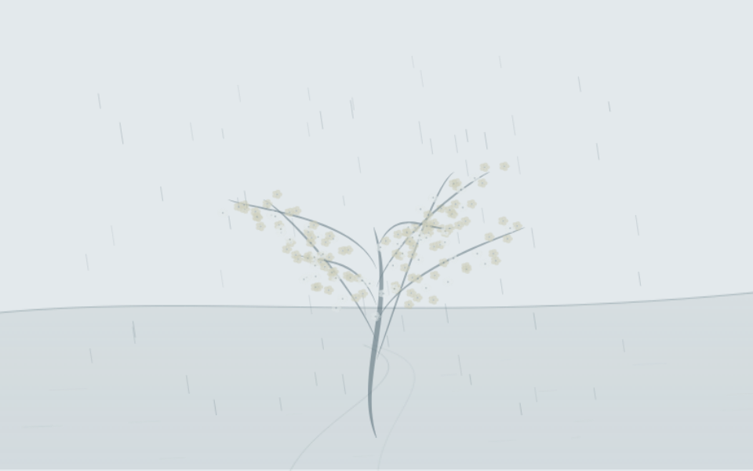
既有回答，引用范围曾展开，解读待复核。本地重放；自动选择 twilight，未指定手动配色。
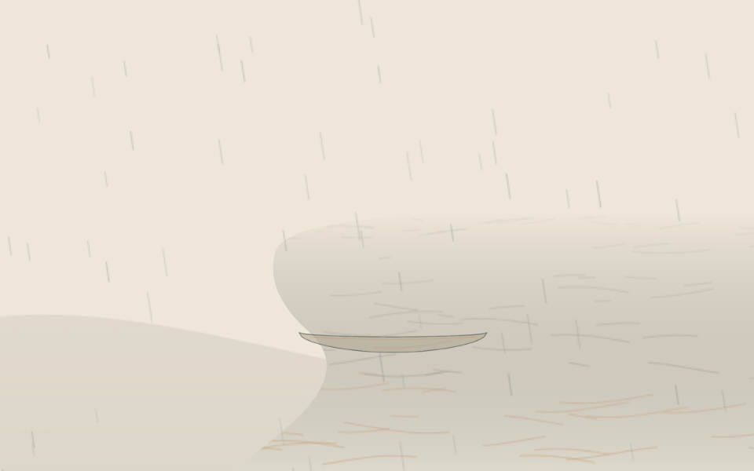
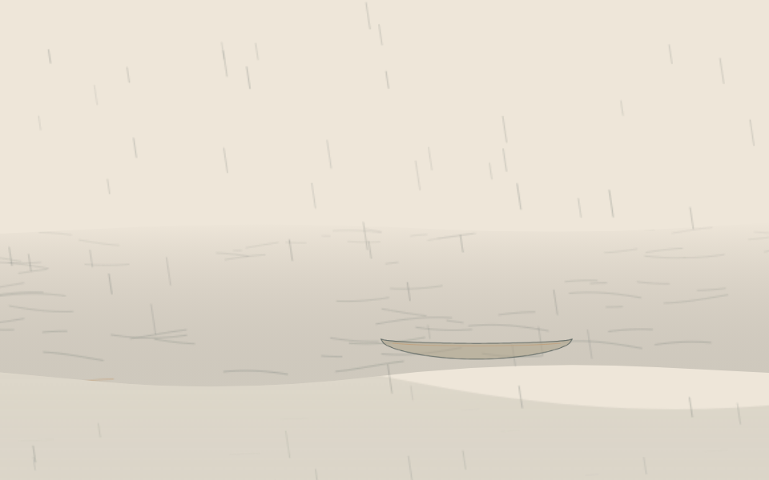
既有真实回答。本地重放；自动选择 clear，未指定手动配色。
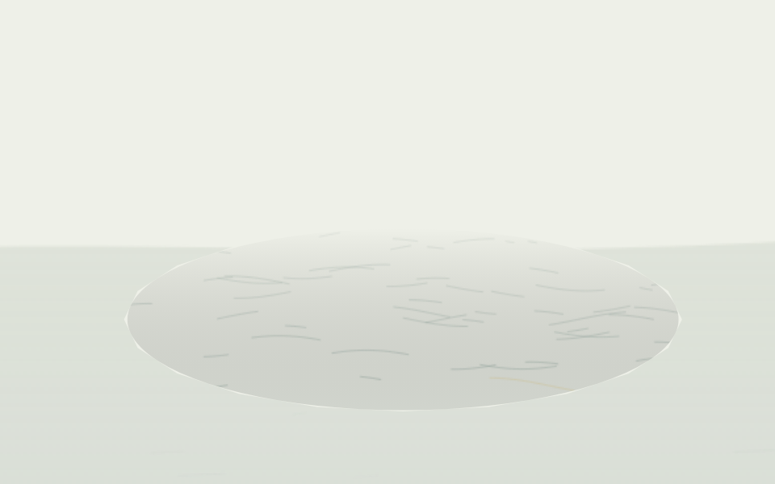
既有真实回答。本地重放；自动选择 mineral，未指定手动配色。
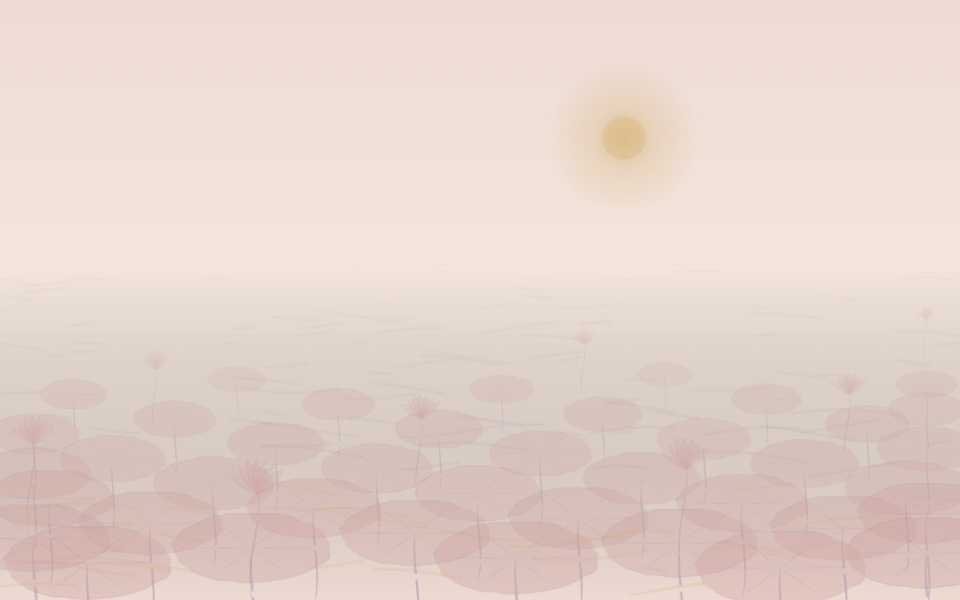
莲叶：接天莲叶无穷碧（原文颜色线索）；荷花：映日荷花别样红（原文颜色线索）
既有真实回答。本地重放；自动选择 mineral，未指定手动配色。
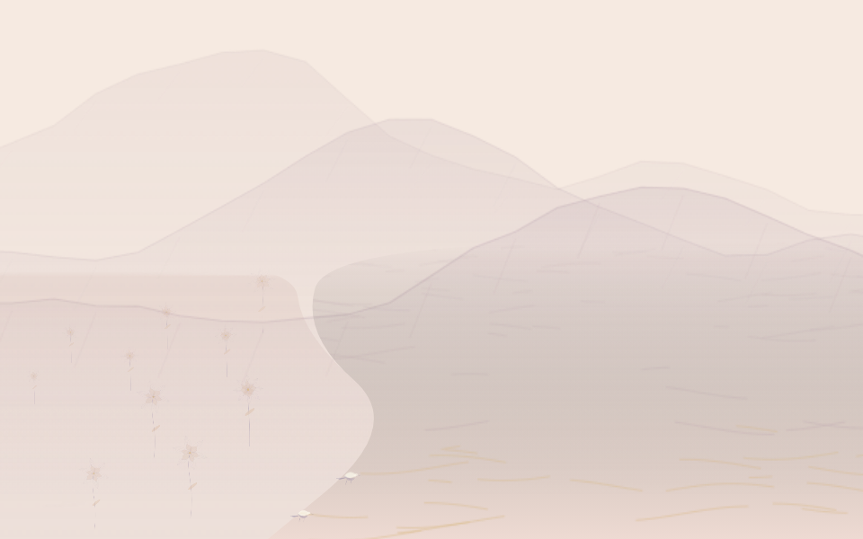
山：山青花欲燃（原文颜色线索）；江：江碧鸟逾白（原文颜色线索）；花：山青花欲燃（本地颜色解释）；鸟：江碧鸟逾白（原文颜色线索）
既有真实回答。本地重放；自动选择 indigo，未指定手动配色。
既有真实回答。本地重放；自动选择 mineral，未指定手动配色。
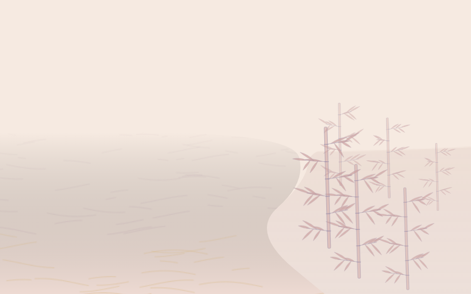
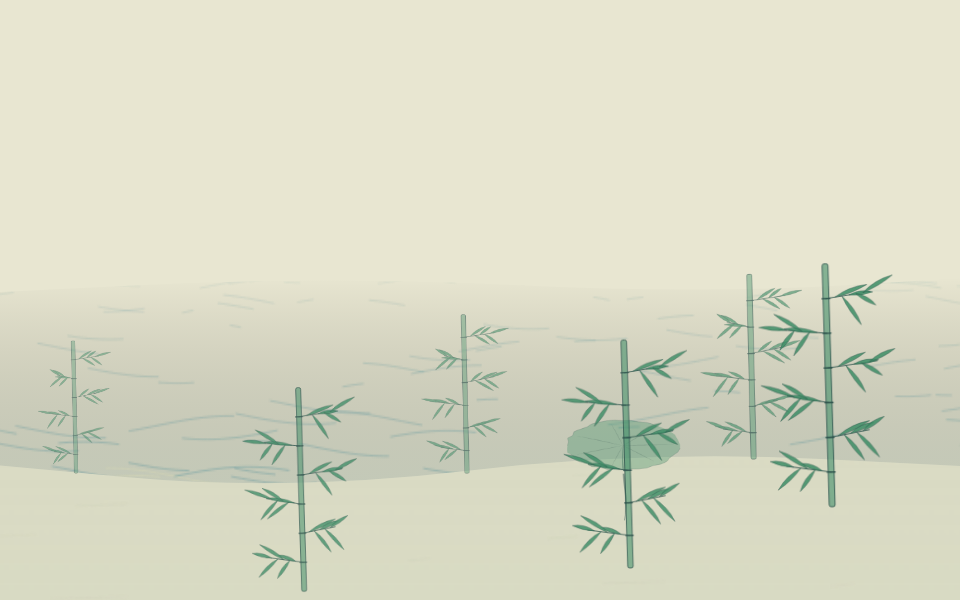
既有回答，引用范围曾展开，解读待复核。本地重放；自动选择 mineral，未指定手动配色。
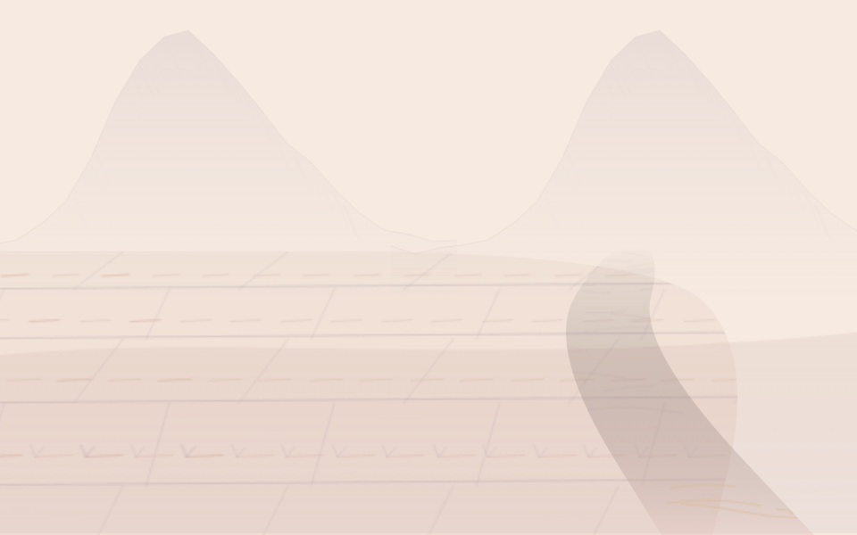
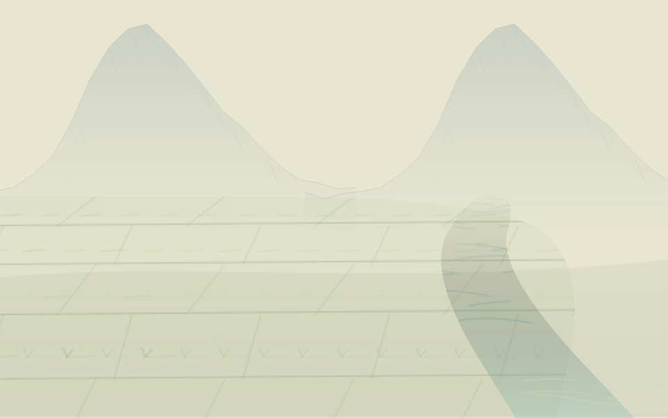
既有真实回答。本地重放；自动选择 mineral，未指定手动配色。
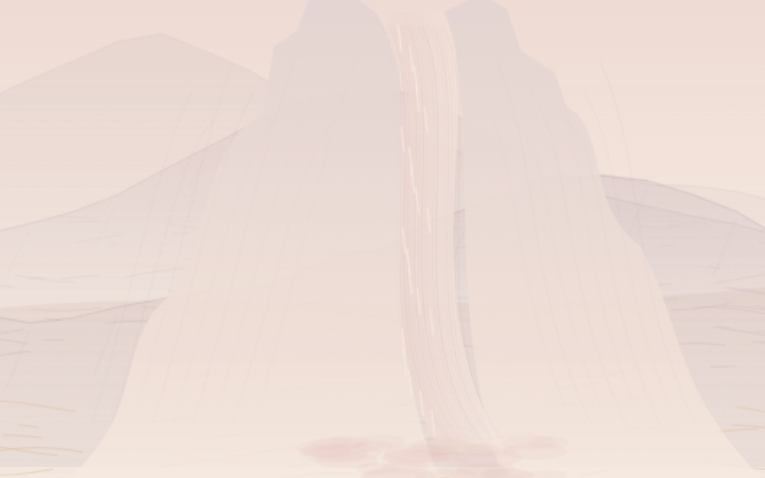
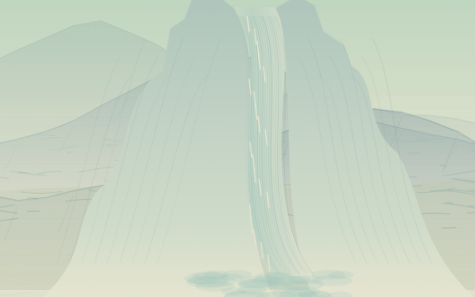